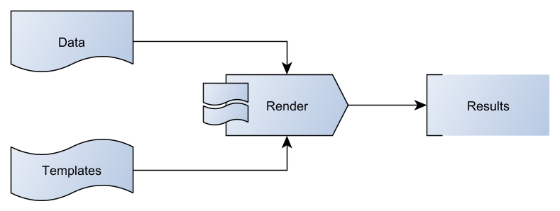
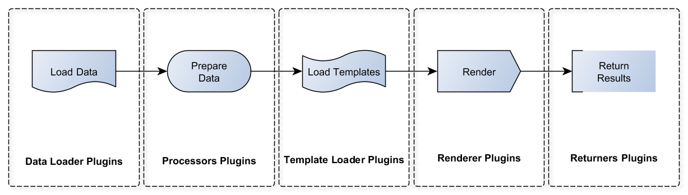

Template Text Renderer - TTR¶
Module to produce text files using templates. TTR targets to implement common work flow:
Above approach is fairly simple but powerful enough to address various use cases where structured data need to be transformed in a textual form understandable by targeted system.
TTR uses plugins to load data and templates, render and return results.
In addition, TTR comes with a collection of Jinja2 templates to help with common use cases.
Table of Content¶
API Reference¶
-
class
ttr.ttr(data=None, data_plugin=None, data_plugin_kwargs={}, renderer='jinja2', renderer_kwargs={}, templates_dir='./Templates/', template_name_key='template', returner='self', returner_kwargs={}, result_name_key='device', processors=[], templates_dict={}) Main class to instantiate TTR object.
- Parameters
data – (str) type depends on data plugin in use, but can be an OS path string referring to YAML structured text file or CSV spreadsheet
data_plugin – (str) name of data plugin to use to load data
data_plugin_kwargs – (dict) arguments to pass on to data plugin
renderer – (str) name of renderer plugin to use, default
jinja2renderer_kwargs – (dict) arguments to pass on to renderer plugin
templates_dir – (str) OS pat to directory with templates, default
./Templates/template_name_key – (str) name of the key in data items that reference template to use to render that particular datum, default
templatereturner – (str) name of returner plugin to use, default
selfreturner_kwargs – (dict) arguments to pass on to returner plugin
result_name_key – (str) name of the key in data items value of which should be used as a key in results dictionary, default
deviceprocessors – (list) list of processor plugins names to pass loaded data through, default is empty list - no processors applied
templates_dict – (dict) dictionary of {template_name: template_content}
-
load_data(data, data_plugin=None) Method to load data to render.
- Parameters
data – (str) data to load, either OS path to data file or text
data_plugin – (str) name of data plugin to load data, by default will choose data plugin based on file extension
-
run() Method to render templates with data and produce dictionary results keyed by
result_name_key.If returner set to
self, will return results dictionary.